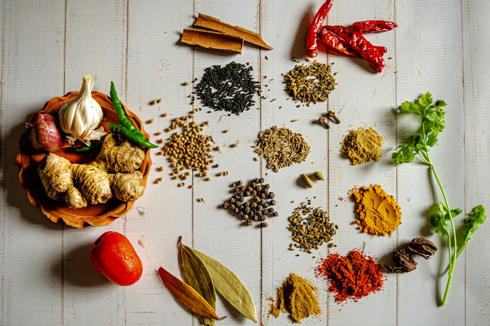
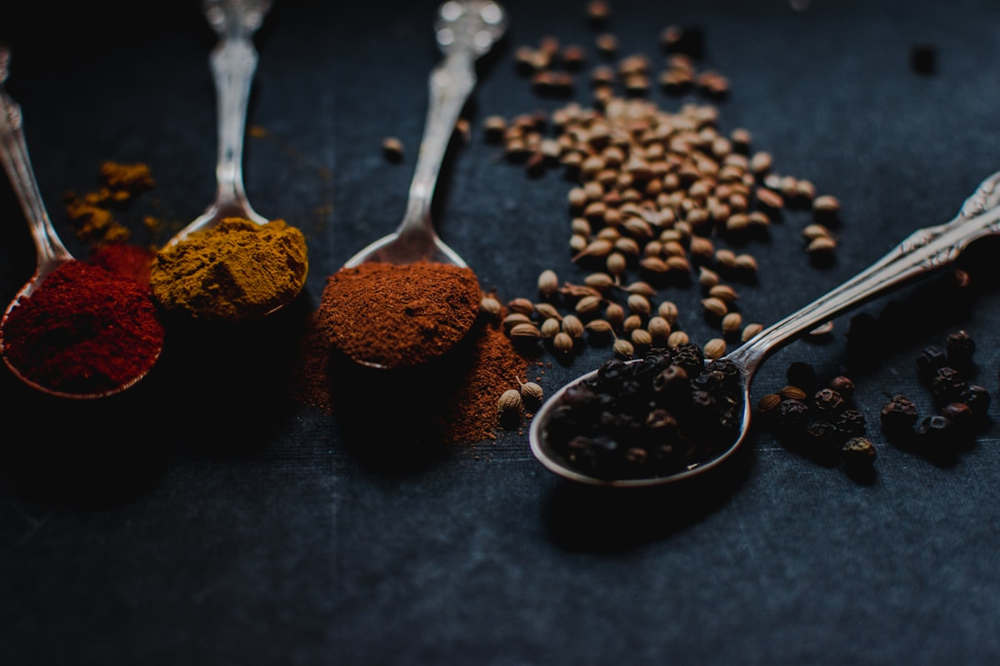
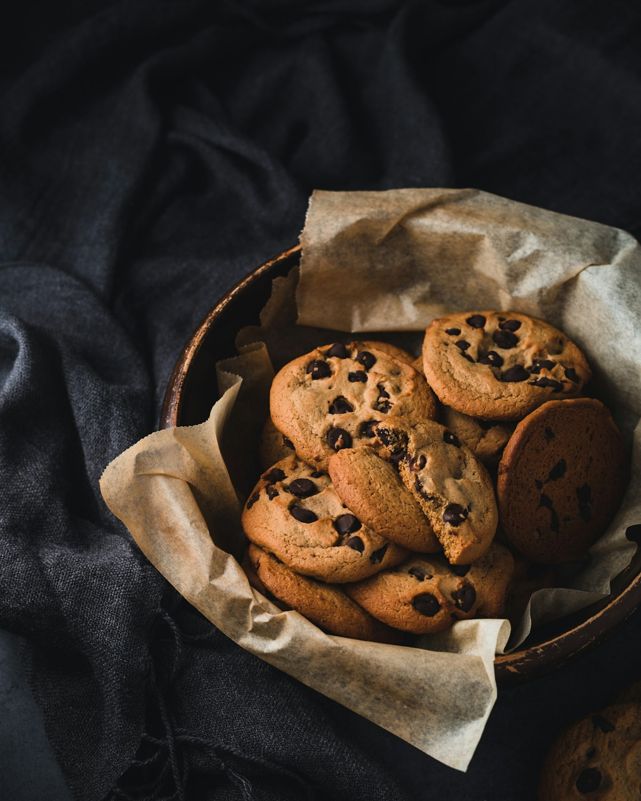
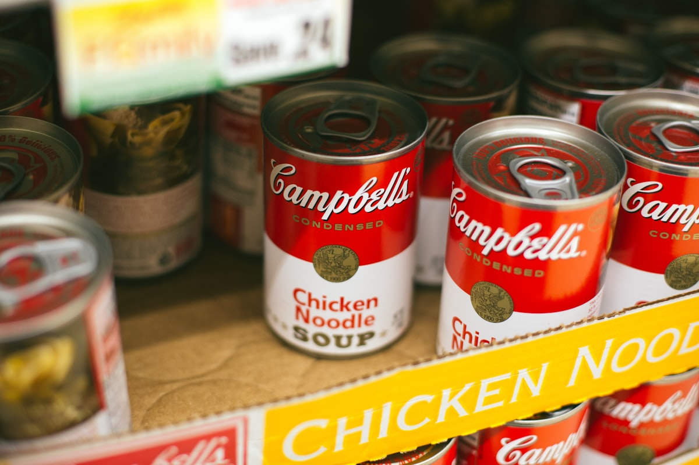
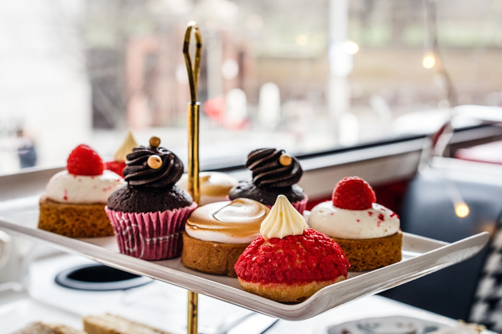
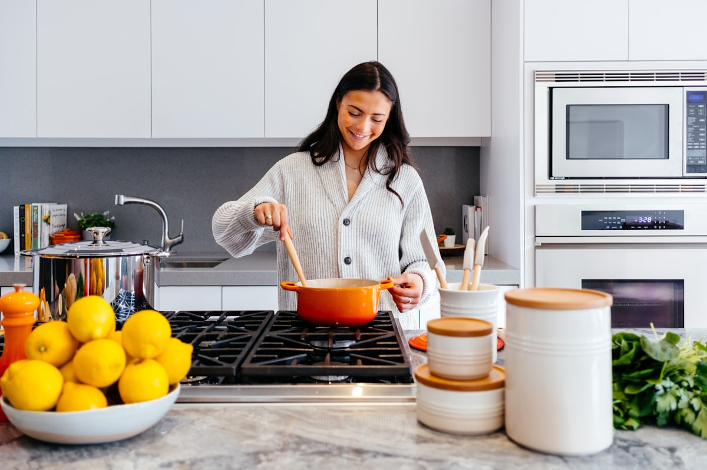

Golden Amber Delicacies Spiced in Pure Stigmas
Saffron Nibble elevates the world's most prized culinary spice into delicate shortbread confections, golden honeycomb infusions, candied citrus bites, and aromatic culinary syrups for discerning palates and Michelin-starred kitchens.


The Aristocrat of Spices Reimagined for the Nibble
Saffron (Crocus sativus) blossoms for only two fleeting weeks in late autumn. Each delicate lilac flower yields exactly three crimson stigmas, which must be plucked by hand before dawn to prevent fragile aromatic safranal terpenes from evaporating under the morning sun.
At Saffron Nibble, we refuse commercial dust or adulterated yellow styles. We source exclusively unblemished Super Negin threads possessing an ISO 3632 Category I reading of over 250 crocin color units. This uncompromising spice bedrock guarantees unmatched floral aroma, bittersweet depth, and an opulent gilded hue in every bite.
- Pre-Dawn Plucking: Hand-gathered in small mountain micro-climates.
- Zero Yellow Style: Pure, thick crimson tips rich in picrocrocin.
- Cryo-Milled Preservation: Milled cold to retain volatile aroma compounds.
Artisanal Saffron Delicacies & Shortbread Morsels
Every confectionery recipe balances the earthy bittersweet floral notes of saffron with luscious European grass-fed butter, Persian wild pistachios, and raw cardamom pods.

Pistachio Saffron Sablé
Slow-steeped saffron butter blended with roasted Bronte pistachio slivers and coarse flake salt, baked to golden crisp crumb perfection.
Order Gift Box
Candied Saffron Citrus Peel
Hand-cut Sicilian orange and Meyer lemon rinds simmered for seven days in an aromatic reduction of saffron threads and green cardamom.
Order Gift Box
Saffron Almond Gaz Bonbons
Fluffy egg-white nougat whipped with wild mountain manna, toasted almond batons, and crimson saffron essence, dusted in stoneground flour.
Order Gift Box
The Thermodynamics of Saffron Flavor Release
Most home bakers inadvertently destroy saffron's delicate top notes by throwing dry threads into boiling water. High heat degrades safranal—the essential oil responsible for saffron's intoxicating aroma—turning pleasant floral notes unpleasantly medicinal.
At Saffron Nibble, our pastry chefs employ the Iranian "Ice Extraction" protocol. Crushed stigmas are sprinkled over pure mountain ice shavings. As the ice gently melts at 4°C, water molecules penetrate the cell walls without thermal shock, releasing vivid water-soluble crocin pigments while locking in volatile aromatic terpenes.
- Controlled Cryo-Maceration: 12-hour slow melt preserving fragile safranal.
- Fat-Lipid Binding: Infusing fat-soluble carotenoids directly into clarified butter.
- Optimized pH Balance: Preserves brilliant golden color without browning.

Handmade on Mercer Street in Small Artisanal Batches
Located at 181 Mercer Street in Manhattan's historic SoHo district, the Saffron Nibble atelier brings centuries of Middle Eastern and Mediterranean spice artistry to contemporary New York epicures.
Every cookie is stamped by hand, every candy kettle stirred over gentle copper heat, and every jar of botanical honey hand-ladled. We produce no mass-market runs; our confections are baked fresh weekly in limited tasting editions to ensure maximum aroma vitality upon reaching your table.
Book Private Atelier TastingBotanical Infused Nectars & Culinary Salts
Complement your home baking and cheese pairings with our hand-infused pantry creations.
Wildflower Saffron Honey
Raw, unheated Catskills wildflower comb honey infused for three months with Grade 1 saffron stigmas and wild lavender buds. An unforgettable drizzle over aged Manchego.
Saffron Fleur de Sel
Sun-evaporated French sea salt crystals ground with aromatic saffron powder and dried lemon zest. Imparts subtle golden radiance to seared fish and artisan focaccia.
Rosewater Saffron Botanical Cordial
A non-alcoholic distillation of Damascus rose petals, organic cane nectar, and crushed saffron threads. Ideal for pastry brush glazes and sparkling botanical mocktails.
Curated Saffron Nibble Flights For Special Gatherings
Experience the nuances of different harvest regions through our signature tasting flights.
Features Khorasan Super Negin sablés, saffron-cardamom almond brittle, and a 4oz jar of saffron wildflower honeycomb. Packaged in an embossed gilded metal keepsake tin.
- 12x Handcrafted Saffron Pistachio Sablés
- 1x 4oz Infused Raw Comb Honey Jar
- 1x Tin Saffron Almond Toffee Brittle
Features Pampore Mongra saffron infused shortbread, candied saffron ginger batons, and artisanal saffron citrus syrup for bespoke pastry glazing.
- 12x Pampore Mongra Shortbread Biscuits
- 1x 200ml Rosewater Saffron Glazing Elixir
- 1x Bag Candied Saffron Citrus Zest
Acclaimed by Pastry Masters & Connoisseurs
Read what pastry chefs, food journalists, and culinary purists say about our saffron delicacies.
"The balance in Saffron Nibble's sablé cookies is astonishing. Saffron can easily overpower butter, but here it harmonizes like a baroque concerto."
"Their cold-steeping process preserves the safranal top notes without any bitterness. It is easily the finest artisanal confectionery in New York."
"We ordered the custom saffron gift tins for our corporate gala. Our guests were spellbound by the aroma the moment the gilded lid lifted."
Frequently Asked Questions About Saffron Delicacies
Everything you need to know about our sourcing, shelf life, and culinary storage.
Every single batch of saffron entering our Mercer Street atelier undergoes third-party ISO 3632 testing for crocin (color intensity), safranal (aroma volatility), and picrocrocin (flavor profile). We test for the absence of synthetic dyes like tartrazine or adulterants like corn silk and safflower.
Because our butter sablés are baked to a low water activity level without artificial preservatives, they remain wonderfully crisp and aromatic for 4 weeks at room temperature in their airtight gilded tins. To preserve peak aroma, keep away from direct sunlight.
Never. The breathtaking radiant golden hue in our pastries and honeys comes 100% from natural crocin water-soluble carotenoids released by whole saffron stigmas. We use only organic dairy, non-GMO unbleached flours, raw honeys, and whole spices.
Yes. Our confectionery atelier specializes in bespoke gift packaging, customized ribboning, and tailored flavor profiles for weddings, galas, and corporate gifting. Please submit your inquiry through our Contact page for wholesale or event requests.